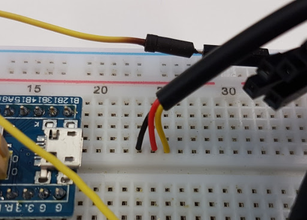

1Wire
1Wire is a simple, low bandwidth protocol that allows a number of devices to be installed on a bus consisting of a single wire pair. Devices may be
parasitically powered from the bus, or powered independently. Communication on the bus is entirely driven from the master. The bus is held high via a pull-up
resistor, and the master & slave devices can pull the bus low via a transistor. Data is communicated via pulse length, which means that 1wire is a timing
senstive protocol.
In this exercise, we will set up the microcontroller as a 1Wire master, and we will use a Maxim
DS18B20 temperature sensor as a slave. We will use a cut-down version of an open sourced 1wire library to communicate with the device. Once we have verified
that we can read the sensor, we will move on to a broken implementation of the library, and debug it with the use of the logic analyser and the DS18B20 datasheet.
Setup
- Locate your temperature sensor is your parts kit, it should have a cylindrical metal body and a wire tail with black, red & yellow wires.
- Connect the 3 wires into an unused area of your breadboard. It may help to insert all 3 wires simultaneously.
- Connect the black wire to the Ground (-) rail on your breadboard with a jumper wire.
- Connect the red wire to +5V on your USB->TTL adapter.
- Connect the yellow wire to pin A7 of the microcontroller.
- Connect the 4.7kOhm resistor between the red and yellow wires of the temperature sensor.
- Import the DS18B20 sample into your compiler.
- Compile the project, and upload it to your board.
- Connect to the serial port (if you are not already connected), you should see something similar to the following:
Found DS18B20: 28:ff:9d:e9:a2:17:04:93
Initiating temperature conversion
Scratchpad=e1:10:0c:ff:7f:46:4b:01:82
Checksum is good
It is 24.125C
If you don't, double check that the device is connected as per the wiring instructions above. Here are a few symptoms you may see:
| Problem |
Resolution |
| No unassigned DS1820 found! |
Double check that the yellow wire is connected to pin A7 |
| Temperature reads 85°C |
Ensure the 4.7k resistor is installed between +5V and the yellow wire |
| Temperature reads very high |
Double check that the red wire is connected to +5V and not +3.3V |
- Move Channel 1/D0 to the yellow wire of the temperature sensor.
- Set up a falling edge trigger on Channel 1, and clear any other triggers you may have. Set a pre-trigger capture ratio of 5%.
- Add a "1-Wire Link Layer" stack decoder.
- Configure the new decoder to use Channel 1/D0 as the 1wire signal line, then click on "Stack Decoder" in the bottom right, and add "1-Wire Network
Layer" decoder to it.
- Configure a sample rate of 500kHz, and 1M samples.
- Start an acquisition, and press the "Reset" button on the microcontroller (next to the yellow jumpers) to start a new transaction with the
temperature sensor.
- Follow the recorded transaction along with the DS18B20 datasheet and the code
to understand what each step of the communication does. You should be able to identify the following:
- Reset & Presense pulses.
- ROM commands & data, SEARCH_ROM & MATCH_ROM.
- DS18B20 function commands, CONVERT_TEMPERATURE, READ_SCRATCHPAD.
- The scratchpad contents, and verify that they match what is printed out on the serial port.
Debugging
Now that you have seen a successful transaction, let's load up some broken code and use the analyser to debug it.
Note: Depending on your prior experience, this section may be quite challenging. Go at your own pace, I'll be sticking around afterwards for assistance, or you may contact me via Twitter (@EvilDeece) or email (alastair@d-silva.org).
- Import the broken project into your compiler,
compile and upload it. All the bugs are in DS18B20.cpp.
- The first problem to fix is that the temperature sensor is not detected. Look at the Reset/Presense pulse section of the waveform, and determine how
it differs from the requirements described in the datasheet. Fix the problem.
- The second problem is that the chip does not appear to be selected properly. Investigate the second and third sections of the waveform, and fix the problem.
- For the third problem, take a few readings. Try warming the sensor in your hands and taking another reading. What do you expect should happen? How do you expect the device to behave if a temperature conversion was not requested? Investigate the second waveform and fix the problem.
- For the last problem, take a few readings. Do the readings make sense? With the data dump of the scratchpad, work a temperature conversion by hand, and compare it to the result reported. Can you now fix the problem?
- If you get stuck, ask your neighbours for a hint, but if all else fails, you can always view the revision history of the broken project to see what errors were introduced.
{kind=link}